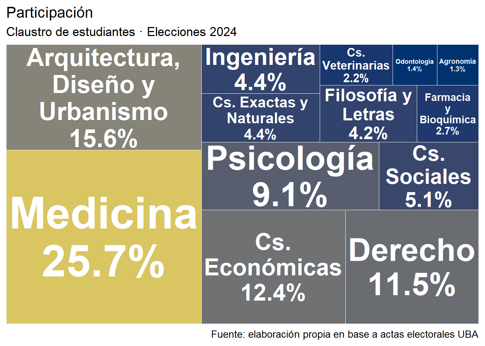
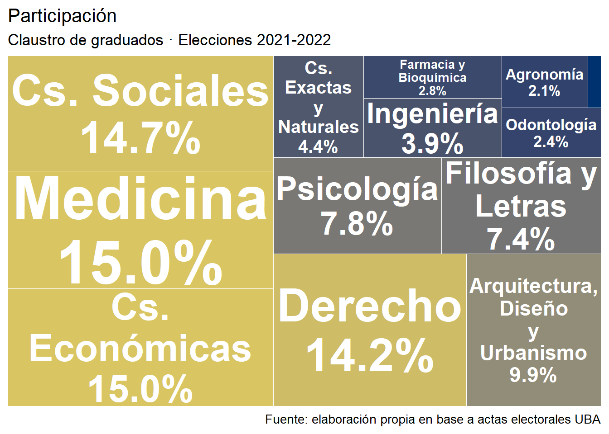
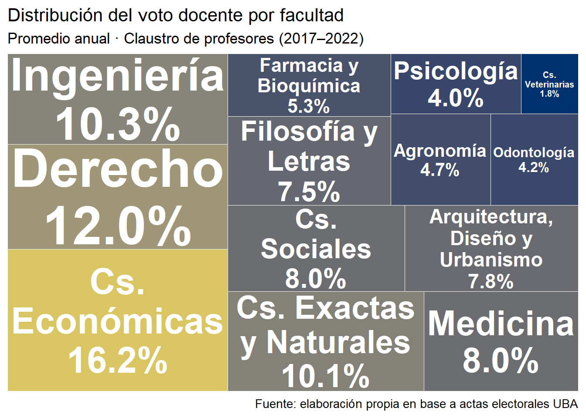
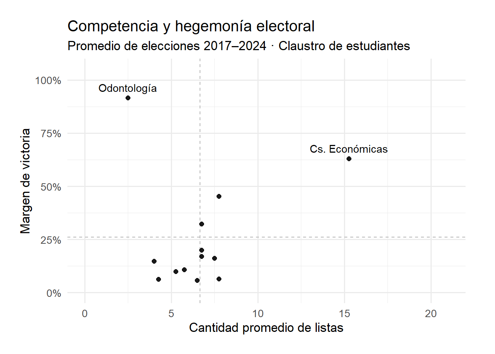
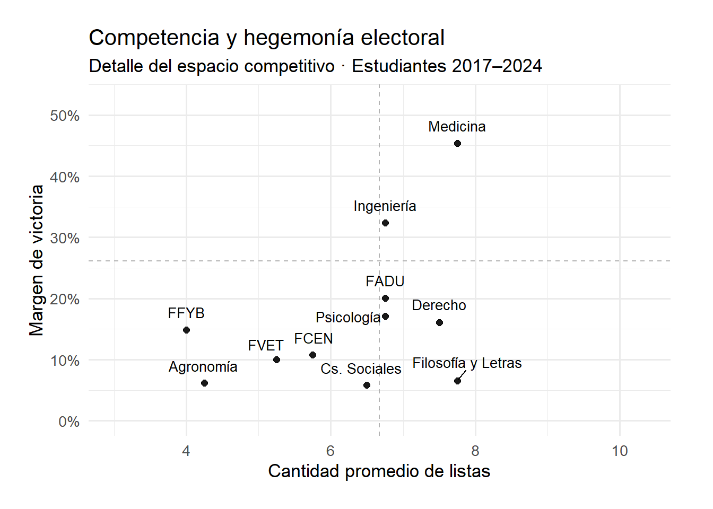
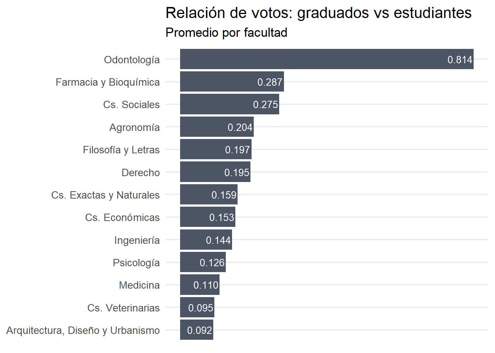
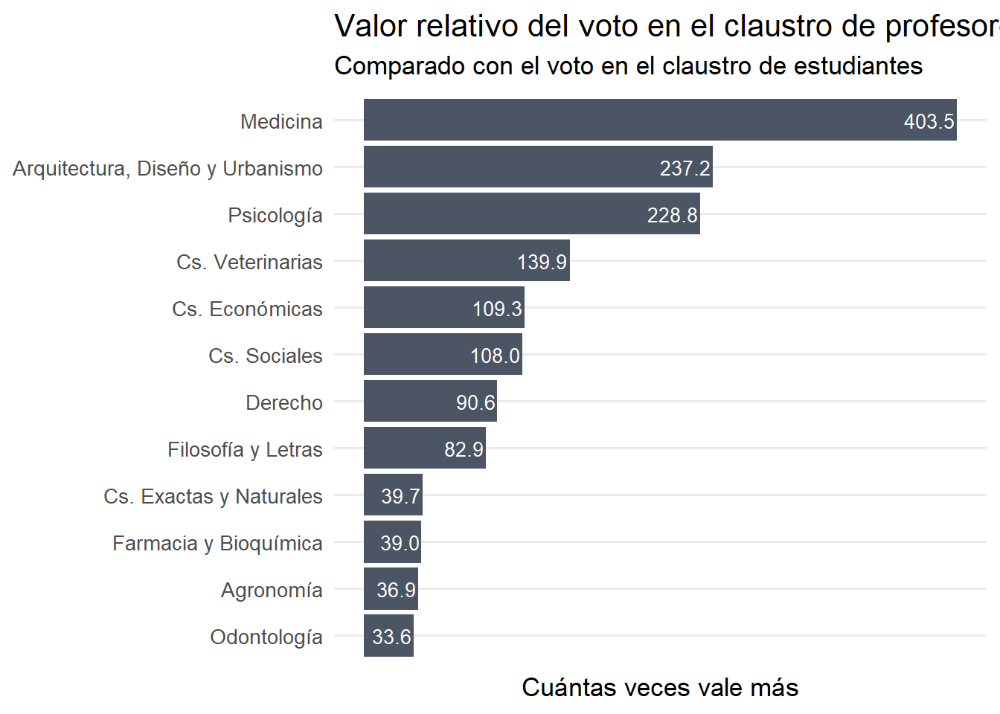

Elecciones en la Universidad de Buenos Aires
Participación, competencia y representación en el sistema electoral universitario
proyectos
electoral
Los datos
Este informe presenta un análisis exploratorio de los resultados electorales en las distintas facultades de la Universidad de Buenos Aires sucedidos en los últimos 15 años.
Los datos, inaccesibles en la práctica, fueron obtenidos mediante solicitudes de acceso a la información pública que disponibilizaron una serie de impresiones escaneadas. Debido al estado de las fuentes, cada facultad presenta distintos niveles de cobertura sobre sus propios comicios. Para las últimas 4 elecciones se cubrieron los huecos con información disponible en los pocos medios que prestaron cobertura y con las redes sociales de distintas agrupaciones universitarias.
13
Facultades
189
Elecciones
418
Listas
1.143043\times 10^{6}
Votos
¿Quiénes votan?
Todas las facultades votan, pero no en todas vota la misma cantidad de gente. Un dato que no por conocido deja de ser interesante. Para el claustro de estudiantes existe una clara predominancia de la facultad de Medicina.
En el claustro de graduados, aparecen Económicas, Sociales y Derecho acompañando a Medicina entre los primeros puestos.

El claustro de profesores muestra un cambio llamativo. Económicas obtiene el primer lugar y aparecen las facultades de Ingeniería y Exactas que no presentaban números considerables en los otros dos claustros. Medicina relegado a un 5° puesto.

La competencia entre estudiantes
La cantidad de listas es una buena proxy de cuán disputada está una elección. Algunas facultades concentran la competencia; en otras, directamente no hay demasiado para elegir.
No siempre la cantidad de listas implica elecciones más competitivas. Este gráfico cruza cantidad de listas con el margen de victoria (la diferencia entre las primeras dos listas) para ver dónde la elección estuvo realmente abierta… y dónde no tanto. Odontología y Económicas se llevan el podio de los márgenes más grandes: Odontología con muy pocas listas, Económicas con muchas.

Si prestamos atención al resto de las facultades, Medicina e Ingeniería destacan como aquellas con mayor margen; en el caso de Medicina también comparte con Derecho y Filosofía y Letras el podio de mayor cantidad de listas promedio.

La participación entre graduados
Graduados, ¿profesionales que participan de la comunidad o docentes sin papeles? Odontología tiene casi la misma cantidad de graduados que de estudiantes votando, una anomalía absoluta. Farmacia y Bioquímica y Sociales lideran el ranking con un promedio de votos de graduados equivalentes casi a un 30% de votos de estudiantes.

La jerarquía de los profesores
El voto de los profesores se ve fortalecido por dos movimientos paralelos: por un lado, eligen ocho asientos, el doble que los otros dos claustros. Por otro, su padrón es muchísimo menor que el de los otros claustros. Este indicador estima cuánto vale un voto en el claustro de profesores respecto a uno en el de estudiantes. Medicina y Odontología son caras opuestas del impacto del voto del claustro de profesores en las decisiones políticas de la facultad.

La relación entre el peso del voto de los profesores y el de los estudiantes se calcula como:
\[ \text{Valor relativo} = \frac{\frac{Bancas_{prof}}{Votos_{prof}}}{\frac{Bancas_{est}}{Votos_{est}}} \]
Una propuesta
Estos gráficos no agotan el análisis, son apenas una muestra de lo que puede dar una base bien construida. El desafío es construir un equipo que pueda transformar estos datos en información valiosa para la comunidad universitaria.
Este análisis es hijo bastardo de un proyecto construido durante el 2024 llamado UBA electoral, que parió una aplicación para analizar el desempeño electoral de cada facultad.